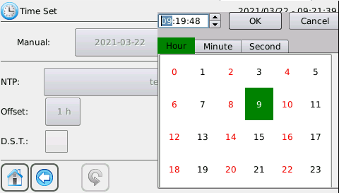
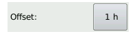

La pagina Time Set serve per impostare la data e l'ora del sistema.
E' divisa in 2 aree:
Nella sezione manual è possibile impostare manualmente la data e l'ora del sistema.
Premendo sul pulsante con la data apparirà il calendario


Per selezionare il giorno da impostare basta premere sul giorno desiderato.

Si può andare avanti o indietro nei mesi tramite le frecce poste in alto sul calendario, oppure premendo sul tasto con il mese corrente è possibile visualizzare tutti i mesi dell'anno.

Per cambiare anno si può andare avanti o indietro con le frecce oppure premere il tasto con l'anno corrente e selezionare l'anno desiderato.
Premendo sul pulsante con l'orario apparirà il selezionatore di ore, minuti e secondi.
Premendo OK verranno salvate le ore, i minuti e i secondi impostati.
Cancel annulla l'operazione.
Per confermare l'operazione di cambio data e ora manuale premere
Una message box di conferma apparirà al completamento dell'operazione.
Nella sezione NTP è possibile impostare via NTP la data e l'ora del sistema, in particolare è possibile impostare i parametri per l'abilitazione del Network Time Protocol,
cioè server ntp, timeout in secondi, offset in ore e periodo in ore.
La funzionalità NTP è da usare espressamente con il servizio sMily abilitato.
Il server NTP di default è tempo.ien.it ed è possibile cambiarlo tramite il pulsate:

Il time offset imposta la differenza di fuso orario e di default è +1 ora (CET). Sono ammessi valori interi da -12 a +12
Il Period imposta ogni quante ore deve avvenire la sincronizzazione NTP, 0 h significa nessuna sicronizzazione, il default è 0

Il timeout indica il tempo di attesa entro quanto ( in secondi ) è possibile ricevere una risposta dal server NTP, il default è 10

Il salvataggio delle impostazioni correnti avviene tramite

La sincronizzazione con il server NTP avviene con il tasto
Il ripristino delle impostazioni di default avviene tramite
Una message box di conferma apparirà al completamento dell'operazione.
Se l'aggiornamento di data e ora comporta un ritorno indietro nel tempo allora verrà generato un nuovo file di log.